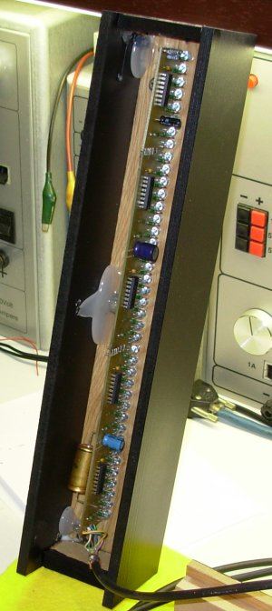

Hoeveel verschillende VU-meters er in de loop der jaren
ontworpen zijn, zal wel nooit achterhaald worden. Dat neemt
echter niet weg, dat het gewoon leuk is, weer eens een originele
VU-meter te bedenken en te bouwen.
Een krachtige gestabiliseerde voeding met een onmeetbare
rimpel, of een eindversterker met een onmeetbare vervorming;
het mogen dan al huzarenstukjes zijn. Echter, niets verblijdt het
hart zozeer als een stel kleurige LED's, die op-en-neer dansen
in de maat van de muziek.
In dit ontwerp zijn dat blauwe LED's, verdeeld over twee kolommen van 40 stuks elk. Geen verstandig mens zou er ―pakweg vijf jaar geleden― aan gedacht hebben, zijn duurverdiende centjes uit te geven aan 80 blauwe LED's. Maar nu die dingen aangeboden worden voor minder dan 0.5 euro, vormt de aankoopprijs geen belemmering meer. Daar komt bij, dat de lichtopbrengst van deze blauwe rakkers zó hoog is, dat ze meteen als verlichtingsbron dienst kunnen doen...
Een kolom van 40 LED's biedt daarbij heel wat meer mogelijkheden dan een soortgenoot die slechts 8 LED's tot zijn beschikking heeft. In het voorbeeld hiernaast zie je enkele LED's die fel oplichten, gevolgd door een “staart” van LED's die minder en minder licht afgeven. Als er slechts 8 LED's ter beschikking staan, is zoiets ondoenbaar.
Wat de naam van het project betreft: Loki toont zich hier in
de gedaante van vuurgod, niet als de listige bedrieger; alhoewel...
Het inkomend audio-signaal dient eerst naar een gelijkspanning
omgezet te worden. Omdat we in de eerste plaats leuke effecten
willen bereiken, en minder (of helemaal niet) geïnteresseerd
zijn in absolute metingen, is de AC-DC omzetter voorzien van een
Automatische Volume-Regeling (AVR1).
De eerste trap in het schema hierboven bestaat uit een stel doodnormale
wisselstroomversterkers, opgebouwd rond N1 en N2.
Rond N3 en N4 is telkens de eigenlijke AC-DC omzetter
opgebouwd.
De AVR bevindt zich tussen die twee trappen, en wordt gestuurd
door de laatste trap. Wat er gebeurt is dit: het
gelijkspanningsniveau aan de uitgang gaat tevens naar de basis
van een BC517 (T2), wiens emitter een elko (C5) oplaadt. Een
deel van de spanning over deze elko (instelbaar met P1) stuurt
op zijn beurt de basis van een tweede BC517 (T1). Via een stel
weerstanden (R105 en R105') laat T1 een stroom vloeien door een
stel dioden, die strategisch opgesteld staan tussen de eerste en
de tweede trap van de AVR. Hoe groter deze stroom, hoe meer het
signaal tussen N1 (N2) en N4 (N3) wordt onderdrukt.
Deze werkwijze verminkt het audiosignaal geen klein beetje, en
is bijgevolg volkomen ongeschikt voor audio-toepassingen. maar
voor ons doel ―het bepalen van het audio-volume― is deze AVR
meer dan geschikt.
Ten overvloede is elke DC-uitgang voorzien van een
zenerdiode, die moet beletten dat de uitgangsspanning hoger
wordt dan 5Volt.
Hier verlaten we het analoge pad, en geven we de voorkeur aan
het digitale gebeuren. De twee uitgangen (DC OUT) van de AVR
gaan immers naar een ATmega8 (IC1), een handige µ-Controller
die ondermeer over een stel A-D omzetters beschikt. Deze
micro-processor stuurt op zijn beurt 2 stellen van telkens 5
8-bits schuifregisters die in serie geschakeld zijn. Elk van
deze schuifregisters kan 8 LED's laten oplichten of
doven.
Om een ledbalk te sturen volstaan 3 signaallijnen: data,
seriële klok en paralelle klok. Te beginnen met de "verste"
LED (in dit geval de bovenste van de ledbalk) wordt op de
data-lijn een hoog niveau geplaatst als deze moet oplichten.
Vervolgens krijgt de seriële lijn een opgaande puls. Dan komt
de tweede LED aan de beurt, enz...
Als alle 40 LEDS op deze manier zijn doorgegeven, wordt de
paralelle lijn even hoog gemaakt; dit heeft tot gevolg dat de
inhoud van elk seriëel schuifregister doorgegeven wordt aan de
bijbehorende paralelle uitgangsbuffer, waarop de opgegeven data
zichtbaar wordt door het al-dan-niet oplichten van de LED's.
Zo eenvoudig kan het leven zijn...

Links, de sturing in zijn behuizing; rechts, een blik in het binnenwerk van een ledbalk.